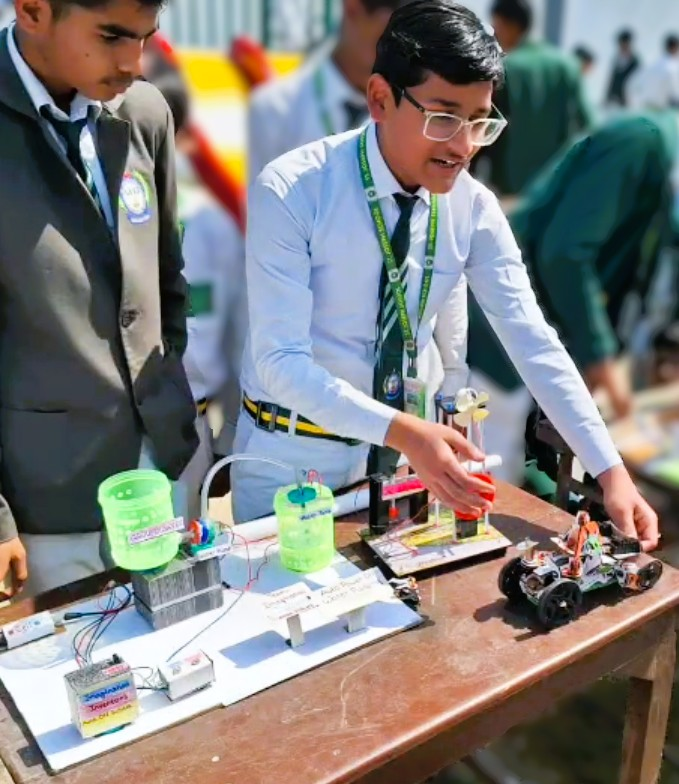
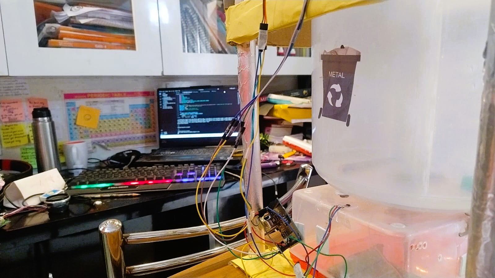
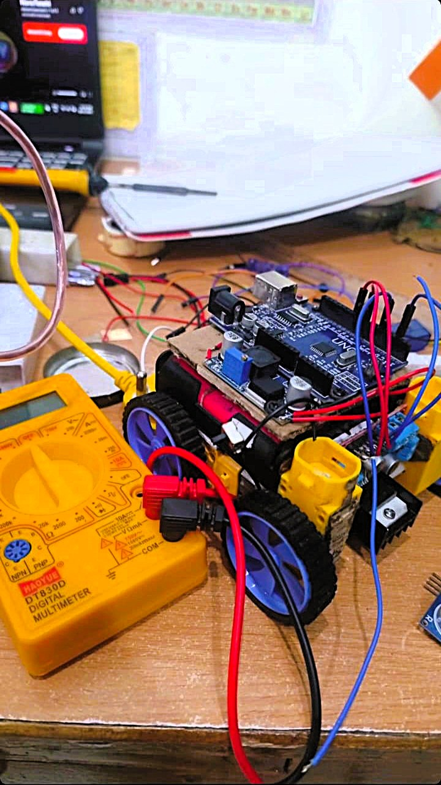

Aman Vishwas
Robotics and embedded systems builder exploring how intelligent machines can operate within the physical world. Founder of Imagination Inventors — an independent laboratory focused on experimental robotics, embedded intelligence, and physical AI architectures.
Engineering Journey
My work began with small experimental electronics systems built to understand how sensors, actuators, and microcontrollers interact.
Over time these early prototypes evolved into more complex robotic systems exploring embedded intelligence and physical interaction. Rather than focusing purely on software development, my curiosity shifted toward machines capable of sensing, deciding, and acting within real environments.
This curiosity eventually led to the creation of Imagination Inventors — a laboratory dedicated to building experimental systems and exploring how intelligence can exist not only in software but also inside physical machines.


Origin of the Lab
Imagination Inventors began as an experimental engineering initiative focused on building real robotic systems rather than purely discussing ideas.
The earliest machines were small Arduino-based prototypes created to explore sensors, actuators, and machine interaction. Through iterative experimentation these prototypes gradually evolved into more sophisticated robotic systems.
Each project developed within the lab represents a step toward understanding how embedded intelligence and robotics can combine to form practical physical AI systems.
Systems Developed
AmViSH
A robotic platform exploring the physical embodiment of intelligent systems and interaction between machines and humans.
AI Bin
A machine learning assisted waste classification system designed to identify and separate different materials before disposal.
Sound Catching Jar
An experimental device inspired by fictional technology, designed to capture and replay stored sound.
Research Direction
The long-term goal of my work is to explore how intelligent machines can assist and interact with humans within everyday physical environments.
Current research directions include embedded AI systems, robotic interaction, and modular intelligent hardware architectures.
- Embedded AI systems on constrained hardware
- Human–machine interaction through robotics
- Low-cost intelligent hardware systems
- Modular robotic architectures
- Assistive physical AI devices

Building Machines That Think In The Physical World
A short visual glimpse of AmViSH_2.0.